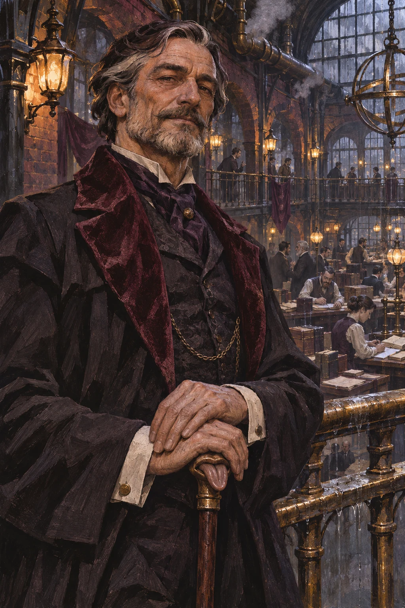
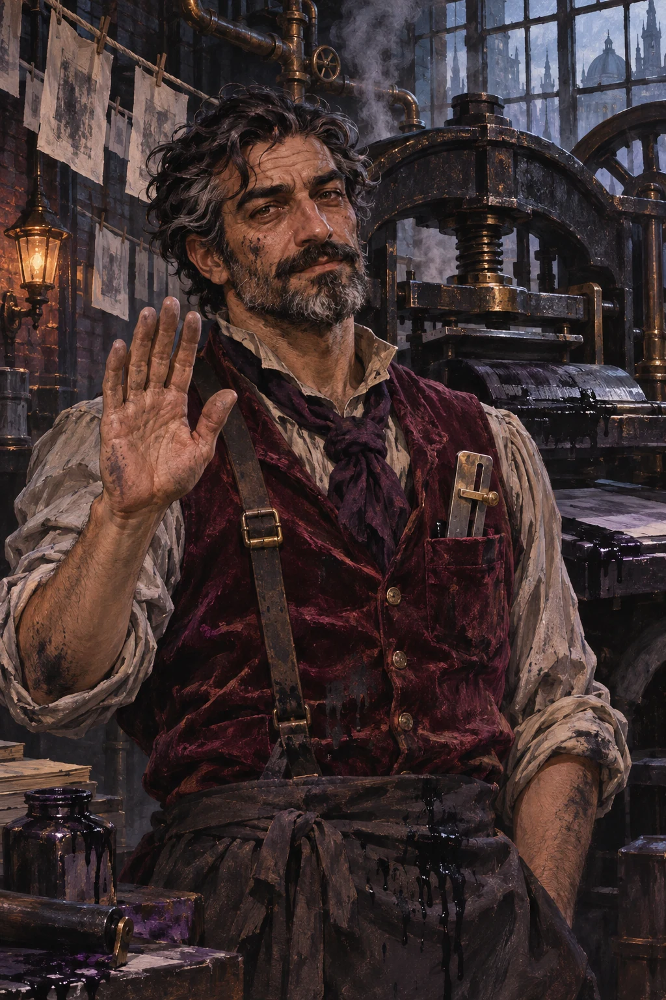
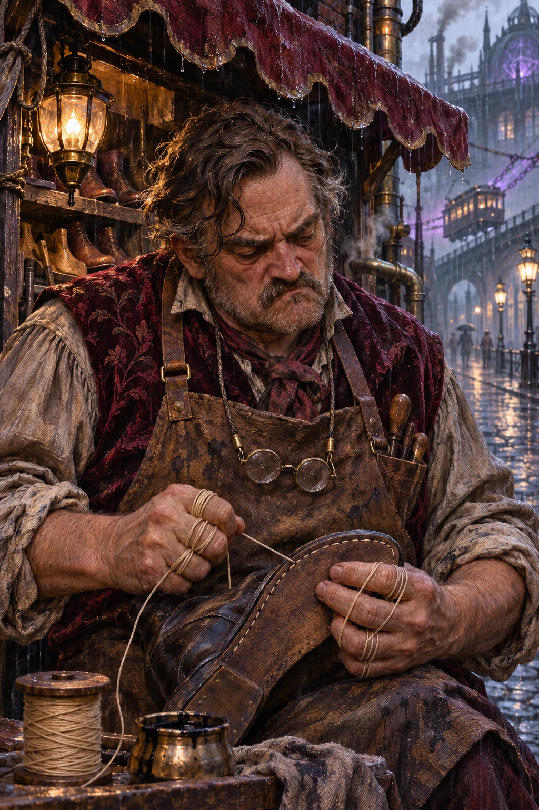
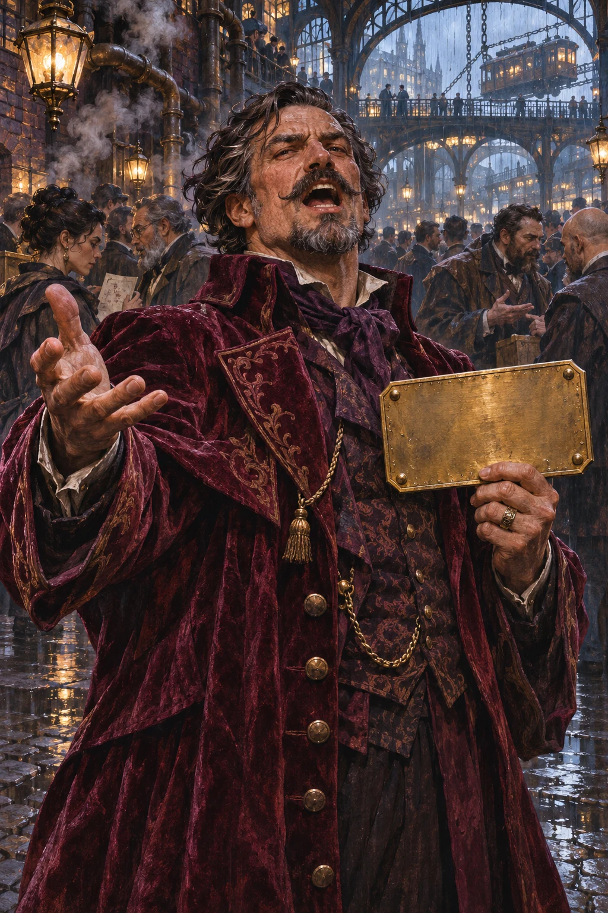

Раскачать бегство вкладчиков из банка Бархатного дома, забрать вклады артели по договору из шкатулки и вынести её до штор — или оставить дома — и выдержать вечерний колокол.

Орест ВальмВиктор Дорн

Аскар МельИнга Рейл

Лукаш КринЛуиза Тамм

Бальтазар Тиль
Если партия изменила план
Если артель отказалась посылать героев в банк
Спросите Агнию, где теперь шкатулка. Вкладчики всё равно собираются у дверей. Отметьте, кто держит договор и какие деньги артели действительно доступны к следующему расчёту. Из очереди можно уйти с пустыми руками и сохранить людей.
Повороты сюжета в этот вечер
Посеять сегодня
Расписка союза. Перед набегом Инга обещает: «Союз заберёт своё, но паи оставлю. Пай союза — это зарплата за три зимы».
К рассвету у конторы банка Бархатного дома уже стоит очередь: кухарки, возчики, шнурницы со Шнурового ряда, литейщики с паями в карманах. Все держат сберегательные книжки и говорят вполголоса, будто в храме. Сквозь стекло виден зал стоек: ряды конторок, на востоке стойка выдачи и сейфовая решётка. Железные шторы над западной и северной дверями подняты до упора, и на каждой качается бархатная кисть. В Вельтене говорят: пока кисть висит высоко, банк платит; опустили кисть — значит, уже должен ты.
Над крышами бьёт утренний удар биржи, и в очереди его считают вслух: «Один». Кто-то в хвосте спрашивает, правда ли, что Дом платит по первому требованию, и ему никто не отвечает. Дверь открывается, писарь у дальней стойки поднимает глаза на очередь: «Следующий».
Подготовка и роли
Перелом кампании: набег отряда Дом выдерживает за счёт мелких должников — артели — по приказу, подписанному заранее. Не смягчайте: так задумано. Набег — бегство вкладчиков, а не налёт: никто не грабит банк. Если шкатулка у стойки, встреча «Двери банка» будет всегда; цель — шкатулка, а не победа: проиграть бой и вынести шкатулку — хороший исход. Вышибалы бьют дубинками и толкают, упавшие оглушены, никто не умирает. Вышибал 3/4/4 на 6/7/8 игроков и Дорн; расстановка и шторы — во встрече. Доска: громкий набег — Курс −5, Долг +3 на колоколе; тихий — Курс −2; вклады +2, если шкатулка вынесена; колокол — пеня +3, паника +8 (+3 без шкатулки), отзыв −1×А (−2×А; дома — −1×А и −3), Дом выстоял Курс +3, дохода нет, порог. Строк не продают; слух-сделки нет, но лист набега идёт в счёт Аскара. Ориентиры (шкатулка вынесена): осторожный 42/11/7 — разрыв 31, «Вывоз»; средний 63/27/8 — 36, «Вывоз»; рискованный 66/47/7 — 19, «Опись»: стол, бывший впереди Дома, падает больше чем на двадцать колоколов. Так задумано: всё решит последний колокол. Колокольчик при Яне «Вывоз» не трогает; на двери он тринадцатый, до него вывоз не доходит. Расписку союза Дом покупает у Квасцов только в ночь после этого колокола: сегодня ни Инга, ни Дорн о ней не говорят. Сцены по 50 минут, перерыв 15 минут после второй.
Агния Свер — шкатулка артели у стойки банка и договор, который в ней.
Ольга Брандт — строй вышибал и проход к западной двери.
Ульяна Вен — очередь вкладчиков: громкий набег или тихий.
Сцена 1 · 50 минут
Утренний лист
Первым к дальней стойке подходит литейщик в прожжённой куртке, получает кошель, пересчитывает монеты прямо у окна и уходит не оглядываясь, — и вся очередь провожает его глазами. Шаг вперёд делает следующий. А на полу биржи в этот час тесно, как в праздник: посланники домов стоят у перил плечом к плечу, переписчики не поднимают голов, и слух об очереди бежит от перегородки к перегородке быстрее, чем мел по табло. В Вельтене давно заметили: биржа слышит очередь у банка раньше, чем банк её видит. Глашатай поднимается к кафедре с табличкой цен, и гул на полу разом стихает.
Удар Корнеля Шая уже прозвучал над крышами. Бальтазар Тиль: «Лот Отека — [Долг]. Кто держит?» «Бумага дня: вклады Бархатного дома — к выдаче по первому требованию. Кто скажет „беру“, может звать очередь с пола; кто промолчит, забирает своё тихо». «Пай Бархатного дома — [Курс]». Потом — «Зола». Аскар Мель держит руку на рычаге, пока пресс не встанет: «Подождите, пресс… Так. Лист на набег — не сделка. Денег за него не будет, только очередь». Лист стоит на найденном: строка одной рукой, тень без противовеса, слова Книги. Ева Тарн, если она за столом, разводит краску так, что свежие чернила пачкают пальцы всем, кто держит лист. Инга Рейл со списком смены: «Союз заберёт своё, но паи оставлю. Пай союза — это зарплата за три зимы». Набег громкий: Ульяна и кто-то рядом выходят к очереди с листом, пай Дома падает сильно, но Дом это запомнит. Тихий: вклады забирают только артель и союз. И шкатулка: вклады артели банк выдаёт только против договора, а он в шкатулке. Нести её к стойке — или оставить дома.
Выборы — и что будет дальше
Лот: «держу», «беру N» (Касса −N, Долг −N−1 при N = 2, −N−2 от 3) или молчание — Долг +2.
Голос стола отвечает на лот, пока Бальтазар объявляет бумагу дня: вклады Бархатного дома — к выдаче по первому требованию. «Держу», «беру» с суммой или молчание — Долг плюс два. Сегодня на полу пахнет страхом вкладчиков, и каждое слово отряда слышнее обычного. Бальтазар громче: «Кто держит? Кто забирает вклады? Кто молчит?»
Громкий набег: выйти к очереди с листом и раскачать толпу.
Переговорщик смены и кто-то рядом выходят к очереди с мокрым листом «Золы» и читают его вслух. Толпа качается, очередь растёт, пай Дома падает сильно. Но Дом запомнит: издержки паники вырастут, и на вечернем колоколе Долг подскочит. Зато в седьмой вечер Сурьма сама одолжит паи даром. Инга кричит своим: «Союз — за своим! Паи не трогать!»
Тихий набег: вклады забирают только артель и союз Инги.
Набег тихий: вклады забирают только артель и союз литейной, без листов и без крика. Пай Дома падает меньше, издержки меньше, внимания тоже меньше. Инга со списком смены идёт к стойке первой: «Союз заберёт своё, но паи оставлю. Пай союза — это зарплата за три зимы». Очередь не растёт, но двери банка всё равно закроются — Дом это уже решил.
Шкатулка: Агния (или кому она доверит) несёт её к стойке — или шкатулка остаётся дома: вкладов и боя нет, отзыв бьёт сильнее.
Шкатулку артели либо несут к стойке — хранитель кассы или тот, кому она доверена, — потому что вклады банк выдаёт только против договора, а он внутри. Либо оставляют дома: вкладов нет, боя у стойки тоже нет, но отзыв мелких займов ударит по артели сильнее. Аскар, отдавая лист: «Лист на набег — не сделка. Денег за него не будет, только очередь».
Проверка и путь без броска
Громкий набег — Убеждение Сл 13 у толпы (второй помогает — преимущество): Курс −5, когда очередь хлынет в банк, и Долг +3 на вечернем колоколе (издержки шума Дом пишет на лот); провал — набег идёт как тихий. Тихий — без броска: Курс −2. Лист набега Кассе ничего не даёт, но идёт в счёт листов Аскара. «Беру» по бумаге дня — громкий набег возможен; молчание — только тихий.
Если не получилось
Если стол не решил или спорит до полудня, набег тихий: артель и союз встают в очередь сами, Инга ведёт смену, Агния несёт шкатулку к стойке.
Сцена 2 · 50 минут
Двери банка
Зал стоек набит до дверей. Вкладчики машут сберегательными книжками, кто-то кричит «по первому требованию!», и крик подхватывают у каждой конторки. Вклады Бархатный дом выдаёт только у дальней стойки на востоке, у сейфовой решётки: каждый проходит туда через весь зал, на глазах у всех. Там писарь в нарукавниках перекладывает кошели, не поднимая головы. Над обоими входами, главным и боковым, висят поднятые железные шторы с бархатными кистями. На галерее над залом, у лестницы, стоит директор биржи в мягком бархатном воротнике, обе руки на трости, и смотрит вниз на очередь. Над дверями тихо лязгает цепь штор, хотя никто её ещё не трогал.
Зал стоек полон, кричат «по первому требованию!». Отряд в очереди у западного входа; Арсений Эрда, если он за столом, видит в ней свою общину. Агния проходит к дальней стойке на востоке, у сейфовой решётки, и подаёт писарю шкатулку. Писарь сверяет договор артели, кладёт кошель с вкладами на шкатулку, и Агния ждёт в очереди, пока он переписывает договор. Потом писарь, перекрикивая очередь, зачитывает: «Приказ. При панике вкладчиков отозвать все мелкие займы. Издержки паники — на лоты под описью. Подпись — О. Вальм». Дата — за неделю до описи дома Отека, чернила давно сухие. Орест Вальм на галерее, не повышая голоса: «Шторы». Железо идёт вниз. С востока, от стоек и с лестницы галереи, идут вышибалы в серых пальто: «Шкатулку — в обеспечение отзыва». Виктор Дорн кладёт ладонь на шкатулку: «Это уже не ваша вещь, это наше обеспечение». Встреча «Двери банка»: вынести шкатулку с кошелём через западную дверь до конца раунда 5; северная боковая — выход до конца раунда 3. Если шкатулка дома, вкладов и боя нет: Дорн смотрит на пустую стойку, отряд выходит до штор.
Выборы — и что будет дальше
Кто бежит к стойке за шкатулкой; передать её соседу — свободное действие.
Решают, кто бежит к дальней стойке за шкатулкой с кошелём. Вышибалы в серых пальто идут с востока, Дорн кладёт ладонь на крышку: «Это уже не ваша вещь, это наше обеспечение». Шкатулку можно передать соседу на бегу — из рук в руки, как в цепочке на пожаре. Главное — западная дверь, пока железо штор не дошло до пола.
Уходить через северную боковую дверь до конца раунда 3 — путь короче, но штора там падает раньше.
Северная боковая дверь ближе, но железная штора там падает раньше, и успеть надо вдвое быстрее. Кто выбирает её, рискует остаться у самой стойки со шкатулкой в руках, когда железо коснётся пола. Западная дальше, но держится дольше, если проход держат. Кто-то из отряда кричит через зал: «Короче — не значит ближе. Смотрите на штору, а не на дверь!»
Кто держит проход к западной двери — Ольга знает строй вышибал по службе.
Проход к западной двери держат плечом к плечу. Бывший пристав отряда знает строй вышибал по службе: они идут парами, второй прикрывает первого, и бить надо между ними. Пока проход держится, шкатулка идёт к двери. Вышибала узнаёт бывшего сослуживца: «Ты-то куда? Мы ж в одном строю стояли». Ответ короткий: «Стояли. Теперь стою здесь».
Отдать шкатулку Дорну: бой кончается сразу, шкатулка у Дома.
Шкатулку отдают Дорну, и бой кончается сразу: вышибалы отступают к стойкам, железо штор останавливается на полпути. Но шкатулка у Дома: отзыв обойдётся вдвое дороже за каждую строку, Долг вырастет на три, а в последнем колоколе голос артели прозвучит не больше одного раза. Дорн принимает её двумя руками: «Дом благодарит за благоразумие».
Вторая пара ищет у конторок подлинник приказа об отзыве (Внимательность Сл 12) — подпись и дата станут уликой для листа вечера 7.
Пока у стойки шумно, вторая пара ищет у конторок подлинник приказа об отзыве. Он лежит под стопкой квитанций: подпись «О. Вальм», дата — за неделю до описи дома номер семь, чернила давно сухие. Это не паника, а план. Кто держит лист, говорит тихо: «Он знал про набег раньше, чем мы его начали». Улика для листа седьмого вечера.
Проверка и путь без броска
Кошель лежит на шкатулке: вынесли шкатулку — вынесли вклады, Касса +2. В бою держатель шкатулки, получив урон, — спасбросок Ловкости Сл 12, провал — она падает на пол его клетки; снаружи — вынесена. Приказ: Внимательность Сл 12 — подлинник на стойке, подпись О. Вальма, дата за неделю до вечера 1; без броска — писарь уже прочёл его с подписью и датой. Доска: громкий набег — Курс −5 сейчас; тихий — Курс −2; Курс не ниже 3. Цена шкатулки на колоколе: вынесена — Касса +2, паника Долг +8, отзыв Касса −1×А; потеряна — Долг +11, Касса −2×А; дома — Долг +8, Касса −1×А и ещё −3.
Если не получилось
Кто остался внутри, когда легла западная штора, заперт до утра без дальнейшей цены: на рассвете писарь отпирает и выпускает «до выяснения». Шкатулку, оставшуюся в зале, Дом забирает: артель не кончается, но теряет больше на отзыве. Если шкатулка дома, приказ всё равно звучит вслух — улика у отряда.
Сцена 3 · 50 минут
Дом выстоял
Под каждым навесом Шнурового ряда сегодня держат серые листы с бархатной печатью: Дом отзывает зимние займы. Такой лист в Вельтене не вручают в руки — его кладут на порог, прямо поверх тени, и поднимать его приходится самому. Фонари на крюках горят тускло, мотки шнура убраны раньше обычного. У двери дома номер семь стоит пост. Сапожник в мастерской стучит молотком реже, чем всегда, шнурница под соседним навесом плетёт и не поднимает глаз, литейщики кучкой смотрят в сторону биржи. Немолодой ткач из артели подходит к вам с серым листом в руке. «Это теперь как? — спрашивает он. — Отдавать?»
Под навесами Шнурового ряда должники артели держат бумаги отзыва: зимние займы Дом требует назад сегодня. У двери дома номер семь — пост. Лукаш Крин не поднимает глаз от подошвы: «Мы же с вами стояли». Луиза Тамм плетёт: «Плету им шнуры и стою в вашей артели. Есть-то надо». Инга Рейл со сменой под соседним навесом смотрит на табло биржи: «Пай Дома поднялся. Значит, Дом стоит на нас». Бьёт вечерний колокол; читайте строки доски по одной, с причиной: пеня — Долг +3; издержки паники — Долг +8, ещё +3 за громкий набег и +3 за потерянную шкатулку; отзыв — Касса −1 за каждую строку артели, −2 без шкатулки, ещё −3, если она осталась дома; Дом выстоял — Курс +3; дохода артели нет. Потом порог: при разрыве 31 и больше Дом вывозит две вещи по описи — первыми печь-обещание и кровать с бархатным пологом, и в доме сразу холодно. Агния держит шкатулку — или пустые руки.
Выборы — и что будет дальше
Что сказать артели: стоять до последнего колокола — или отпустить тех, кому нечем платить.
Артели говорят прямо: стоять до последнего колокола — или отпустить тех, кому нечем платить отзыв. Стоять — значит, все придут в седьмой вечер и в последний колокол, но кому-то будет нечего есть до утра. Отпустить — честно, но артель станет меньше. Луиза плетёт, не поднимая глаз: «Плету им шнуры и стою в вашей артели. Есть-то надо».
Открыть шкатулку и прочесть договор артели вслух, если она у отряда.
Шкатулку открывают под навесом и читают договор артели вслух — каждую подпись и вторую руку рядом. Должники слушают свои имена, как перекличку. После набега это звучит иначе: не бумага, а обещание. Прохор Зимин снимает шапку: «Две руки. Мы же все тут расписались». Лукаш кивает: «Мы же с вами стояли. И постоим ещё».
Подойти к Инге со сменой — или оставить её до утра.
К Инге подходят под соседний навес, где смена смотрит на табло. Она не отводит глаз от цифр: «Пай Дома поднялся. Значит, Дом стоит на нас». Если поговорить с ней сейчас, она будет знать, что отряд рядом, когда утром случится то, чего она боится два года. Если оставить до утра, утром за неё скажет Дорн — при всех и громко.
Если начался вывоз: стоять у двери, пока выносят печь, — или увести Яна в контору.
Разрыв велик, и Дом вывозит две вещи по описи: печь-обещание и кровать с бархатным пологом. В доме сразу холодно. Можно стоять у двери, пока выносят печь, — молча, свидетелями. Или увести курьера в контору «Последний час», чтобы не смотреть. Пристав, выносящий печь, отводит глаза: «Опись. Не я писал». Колокольчик над дверью качается от сквозняка.
Вторая пара идёт по ряду с Лукашем и Луизой и говорит с должниками — от этого зависит, придут ли все в вечер 7.
Вторая пара идёт по ряду с Лукашем и Луизой от навеса к навесу. Должники держат серые листы отзыва и спрашивают одно: стоит ли завтра приходить на пол. От разговора зависит, придут ли все. Лукаш говорит соседям коротко: «Подошва не врёт: где тонко, там и рвётся. Не рвитесь поодиночке». Свет в окнах горит дольше обычного.
Проверка и путь без броска
Убеждение Сл 12 — никто из артели не уходит, все придут в вечер 7 к «Мелочи после отзыва»; без броска — Агния читает договор из шкатулки вслух, и артель остаётся. Колокол — по порядку, как в описании сцены; число строк артели отзыв не меняет; порог по разрыву Долг − Касса.
Если не получилось
Если шкатулку потеряли, Агния переписывает договор артели по памяти на обороте бумаги отзыва: артель есть, но в последнем колоколе «Голос артели» звучит только один раз. Провал уговоров никого не отнимает: должникам некуда идти, кроме как к вам.
Приказ об отзыве
Лист на стойке банка Бархатного дома, придавленный пресс-папье в виде колокола: печатный бланк, бархатная лента печати, размашистая подпись внизу.
Что можно установить
Приказ за подписью О. Вальма, датированный за неделю до описи дома Отека: «При панике вкладчиков отозвать все мелкие займы; издержки паники — на лоты под описью». Дом готовил отзыв и перекладку издержек на лот Отека заранее, до всякого набега.
Получение
Внимательность Сл 12 у стоек во время встречи «Двери банка» или после неё (вечер 6). Без броска писарь банка зачитывает приказ вслух очереди в сцене 2, ещё до того, как падают шторы.
Запасной путь
Если отряд пропустил чтение, писарь повторяет приказ у стойки каждому новому вкладчику, пока не закрыли шторы; Агния у стойки со шкатулкой слышит его дословно.
Изменения после решений
Если Шкатулка артели вынесена → Вклады взяты (Касса +2), отзыв стоил −1 за строку; на вечернем колоколе 7 доход артели есть; в последнем колоколе «Голос артели» — до трёх раз по карте, Отзыв Дома снимает −3.
Если Шкатулка потеряна или отдана → Шкатулка у Дома: отзыв стоил −2 за строку и Долг +3; «Голос артели» в последнем колоколе — не больше одного раза, Отзыв Дома снимает −5.
Если Шкатулка осталась дома → Вкладов нет, боя у стойки не было; отзыв стоил −1 за строку и ещё Касса −3. Шкатулка у артели: в карте последнего колокола отметьте «вынесена» — «Голос артели» до трёх раз, Отзыв Дома снимает −3.
Если Набег был громким → Долг +3 на этом колоколе; в последнем колоколе «Открытие» на одно больше (предел 3 вместо 2); в вечер 7 Ефимия Сурьма сама подходит на полу и одалживает паи под короткую позицию даром.
Если Приказ об отзыве найден → Подпись Ореста Вальма и дата за неделю до описи — улика, на которой может стоять слух вечера 7.
Завершение вечера
Бальтазар Тиль на закрытии, ровно, как всегда: «Пай Бархатного дома — [Курс]. Дом стоит». Долг Отека теперь — самое большое число на доске, а бархатные кисти на шторах банка опущены до утра. На Шнуровом ряду под навесами шуршат бумаги отзыва, и в окнах должников горит свет дольше обычного. Назовите закрытие доски с причинами и отметьте, где шкатулка артели — вынесена до штор, оставлена дома или потеряна. Утром должники с серыми листами придут к отряду первыми, ещё до колокола.